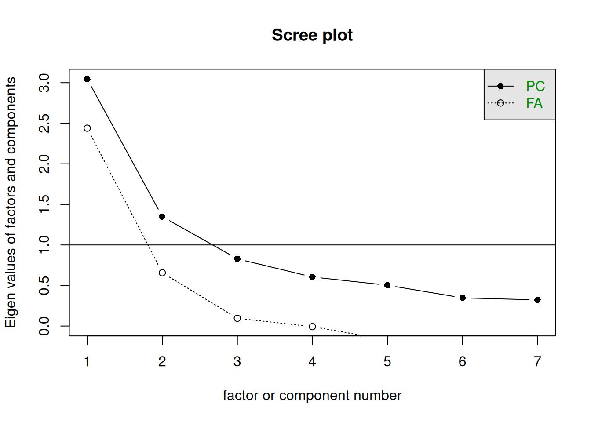
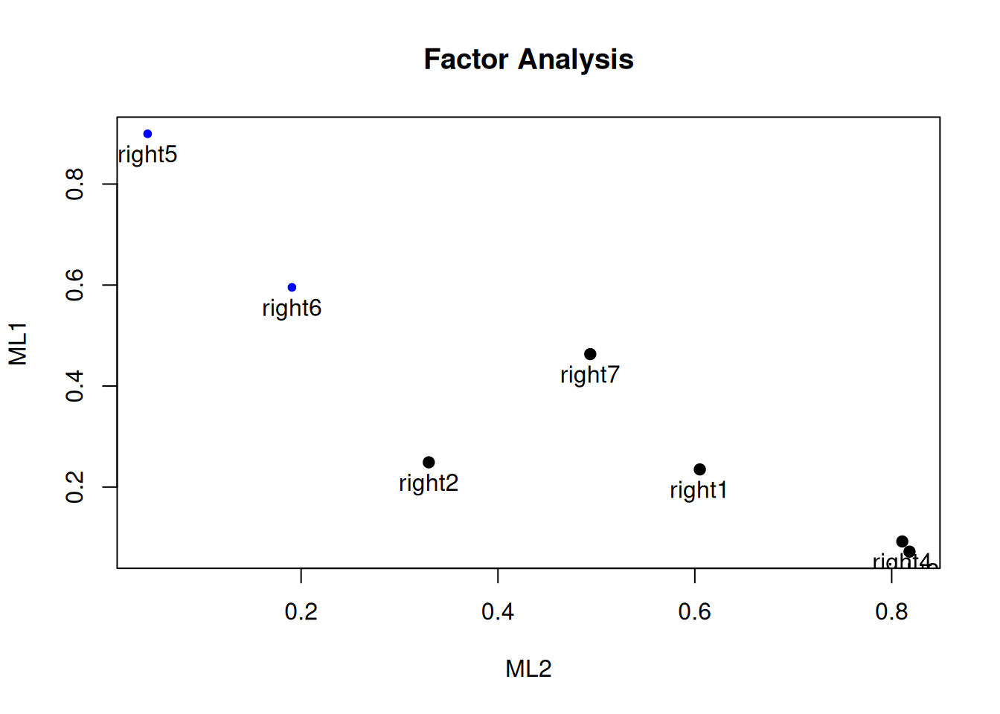
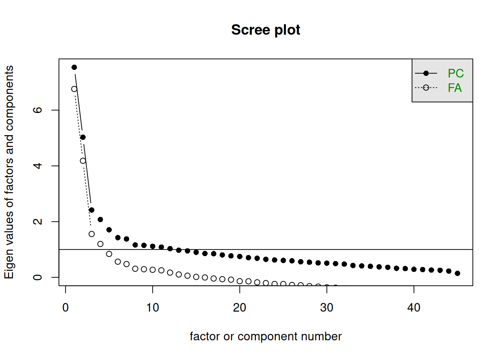

library(psych)
library(haven)
data <- read_dta("data/sbs399_sexroles.dta")
# this dataset contains 5 items about sex role attitudes, in a 5-point Likert format
# Important: in the code below we use the entire data object because it already contains only the 5 items.
# If you have a larger dataset, you need to select the relevant items first.Factor analysis (FA)
Introduction
See slides.
R
You need to learn about the following R functions for factor analysis. They are part of the psych package, which needs to be installed and loaded. Optionally you may want to check principal component analysis.
| R | Description |
|---|---|
fa() |
factor analysis by maximum likelihood |
scree() |
plot of eigenvalues to determine number of factors |
Examples:
Setup data on sex role attitudes
Examine correlation between items:
cor(
data,
use = "pairwise.complete.obs"
)Determine the number of factors graphically with a scree plot:
scree(data)Factor analysis using maximum likelihood:
fa_fit <- fa(
data,
nfactors = 2,
fm = "ml"
)Rotate common factors to ease interpretation.
fa_varimax <- fa(
data,
nfactors = 2,
fm = "ml",
rotate = "varimax"
)
fa_oblique <- fa(
data,
nfactors = 2,
fm = "ml",
rotate = "promax"
)Print the factor loadings (pattern matrix):
fa_varimax$loadingsPrint the structure matrix:
fa_varimax$StructureGet factor scores (default is regression method, can be changed with argument scores in fa()):
fa_scores <- fa_varimax$scoresAssignments
Muslim rights
Use the dataset muslimrights. The dataset contains two sets of items.
Attitudes towards Muslim expressive rights was measured with seven statements. Four example items were:
- The right to establish Islamic schools should always exist in the Netherlands.
- Some Islamic holidays should become official Dutch holidays.
- Dutch TV should broadcast more programmes by and for Muslims.
- In the Netherlands the wearing of a headscarf should not be forbidden.
National identification was measured by six statements:
- My Dutch identity is an important part of my self (iden1);
- I identify strongly with the Netherlands (iden2);
- I feel a strong attachment to the Netherlands (iden3);
- I am proud of my Dutch background (iden4);
- Being Dutch is a very important part of how I see myself (iden5); and
- I feel a strong sense of belonging to the Netherlands (iden6).
We will focus on the first set of items, right1 to right7.
- Check the descriptives. Check the frequencies. Are the variables approximately normally distributed? Why is this important?
- Do an EFA/ML of the data, first with an unrotated solution (
rotate = "none"). Then apply a varimax rotation. - Provide interpretations:
- For the moment we choose two dimensions, even though the scree plot might suggest a different number. In the unrotated solution, how much variance is explained by factor 1 and factor 2? And in the rotated solution? Verify that the sum of the variances of factors 1 and 2 is the same for the unrotated and rotated solutions.
- Which variable is not very well explained by the two factors?
- Interpret the two factors, using the varimax rotation.
- Tip: plotting the factor loadings may help you interpret the factors. Assuming the object created with
fa()is calledfa_varimax, you can plot the loadings withplot(fa_varimax, labels = rownames(fa_varimax$loadings)).
- Tip: plotting the factor loadings may help you interpret the factors. Assuming the object created with
- If you would make two sum scores for the items, which variables go into sum score 1 and which in sum score 2?
- Apply a promax rotation. Provide interpretations:
- What is the correlation between the factors?
- Interpret the two factors.
- Which variables go into each of the factors?
- Oversee all analyses that you carried out. What is your final conclusion with respect to the number of dimensions (factors)? Assume for the moment that you choose two dimensions, what is your final conclusion with respect to the interpretation of the dimensions?
- Optional. Analyze the 6 items about national identification in the dataset.
Bem Sex Role Inventory
BSRI stands for the Bem Sex Role Inventory (Bem, 1974). We have data from a sample of 369 middle-class, English speaking women between the ages of 21 and 60 who were interviewed face-to-face. The data are provided by Tabacknick and Fidell (2007), Using multivariate statistics, 5nd ed., Boston: Pearson. The full inventory takes 60 items. Tabachnick and Fidell state that in our data there are 20 items measuring the overall trait femininity, 20 items the overall trait masculinity, and 5 items measuring the overall trait social desirability. The question format is that respondents are asked to attribute the 60 traits to themselves using scores going from 1 (“never or almost never true of me”) to 7 (“always or almost always true of me”). It turns out that the data are not thoroughly cleaned, as occasionally there appears a 0 and a 9 in the data file. We ignore this problem.
- Do an initial check on the data using frequencies and descriptives. Notice that some of the variables are skewed. Skewness of items lowers the maximum that correlations can attain.
- Produce a scree plot. It is clear that that the elbow criterion is not easy to use here. Clearly there are two outstanding factors. If we take factor 3, then we should also take 4 and 5 as their eigenvalues are close to the eigenvalue of 3. We may even consider factors 6 and 7. We will have a look at two different solutions: two factors and five factors.
- Do an EFA/ML with two factors with a promax rotation. Notice that the correlation between the rotated factors is relatively low. Interpret the two factors.
- Do another EFA/ML, now with five factors and a promax rotation. Interpret the five factors using only those variables that have loadings larger than .40. You can do this by using
print(your_fa_object$loadings, cutoff = .40).
We stop here. We have seen that interpreting the factor structure for such a large list of items is difficult and sometimes somewhat arbitrary. More insight could be found from validating the factors in experimental research and by correlating the factors to other variables. Of course, this is beyond the scope of this course.
Answers
NoteSee answers
library(tidyverse)── Attaching core tidyverse packages ──────────────────────── tidyverse 2.0.0 ──
✔ dplyr 1.2.1 ✔ readr 2.2.0
✔ forcats 1.0.1 ✔ stringr 1.6.0
✔ ggplot2 4.0.3 ✔ tibble 3.3.1
✔ lubridate 1.9.5 ✔ tidyr 1.3.2
✔ purrr 1.2.2
── Conflicts ────────────────────────────────────────── tidyverse_conflicts() ──
✖ dplyr::filter() masks stats::filter()
✖ dplyr::lag() masks stats::lag()
ℹ Use the conflicted package (<http://conflicted.r-lib.org/>) to force all conflicts to become errorslibrary(haven)
library(psych)
Attaching package: 'psych'
The following objects are masked from 'package:ggplot2':
%+%, alphalibrary(skimr)Muslim rights
muslimrights <- read_dta("data/muslimrights.dta")
rights_items <- muslimrights |>
select(right1:right7)Descriptives and frequencies. ML factor analysis assumes multivariate normality, so with clearly skewed the ML significance tests should be interpreted with some caution.
rights_items |>
skim()| Name | rights_items |
| Number of rows | 75 |
| Number of columns | 7 |
| _______________________ | |
| Column type frequency: | |
| numeric | 7 |
| ________________________ | |
| Group variables | None |
Variable type: numeric
| skim_variable | n_missing | complete_rate | mean | sd | p0 | p25 | p50 | p75 | p100 | hist |
|---|---|---|---|---|---|---|---|---|---|---|
| right1 | 0 | 1 | 4.51 | 1.31 | 1 | 4 | 5 | 5 | 7 | ▂▂▅▇▅ |
| right2 | 0 | 1 | 4.33 | 1.53 | 1 | 3 | 5 | 5 | 7 | ▃▃▃▇▅ |
| right3 | 0 | 1 | 3.91 | 1.46 | 1 | 3 | 4 | 5 | 7 | ▅▆▇▇▃ |
| right4 | 0 | 1 | 3.36 | 1.74 | 1 | 2 | 3 | 5 | 7 | ▇▃▃▃▃ |
| right5 | 0 | 1 | 5.43 | 1.20 | 1 | 5 | 6 | 6 | 7 | ▁▁▁▆▇ |
| right6 | 0 | 1 | 5.64 | 1.10 | 3 | 5 | 6 | 6 | 7 | ▁▂▅▇▅ |
| right7 | 0 | 1 | 4.07 | 1.69 | 1 | 3 | 4 | 5 | 7 | ▇▃▇▇▇ |
Determine the number of factors with a scree plot. One might be enough by the eigenvalue > 1 criterion, but we will use two factors for the sake of illustration.
cor(
rights_items,
use = "pairwise.complete.obs"
) right1 right2 right3 right4 right5 right6 right7
right1 1.0000000 0.2591219 0.5473819 0.4990005 0.2565616 0.2038046 0.3578015
right2 0.2591219 1.0000000 0.3104493 0.2788670 0.2312280 0.2980028 0.2167196
right3 0.5473819 0.3104493 1.0000000 0.6592852 0.1000763 0.2058874 0.4131928
right4 0.4990005 0.2788670 0.6592852 1.0000000 0.1129323 0.2025098 0.4966701
right5 0.2565616 0.2312280 0.1000763 0.1129323 1.0000000 0.5389962 0.4400539
right6 0.2038046 0.2980028 0.2058874 0.2025098 0.5389962 1.0000000 0.3922900
right7 0.3578015 0.2167196 0.4131928 0.4966701 0.4400539 0.3922900 1.0000000scree(rights_items)
fa_muslim_unrotated <- fa(
rights_items,
nfactors = 2,
fm = "ml",
rotate = "none"
)
fa_muslim_varimax <- fa(
rights_items,
nfactors = 2,
fm = "ml",
rotate = "varimax"
)Compare the unrotated and rotated (varimax) solutions:
fa_muslim_unrotatedFactor Analysis using method = ml
Call: fa(r = rights_items, nfactors = 2, rotate = "none", fm = "ml")
Standardized loadings (pattern matrix) based upon correlation matrix
ML1 ML2 h2 u2 com
right1 0.59 0.28 0.42 0.58 1.4
right2 0.41 0.07 0.17 0.83 1.1
right3 0.62 0.54 0.67 0.33 2.0
right4 0.63 0.52 0.67 0.33 1.9
right5 0.68 -0.59 0.81 0.19 2.0
right6 0.56 -0.27 0.39 0.61 1.4
right7 0.68 0.04 0.46 0.54 1.0
ML1 ML2
SS loadings 2.52 1.07
Proportion Var 0.36 0.15
Cumulative Var 0.36 0.51
Proportion Explained 0.70 0.30
Cumulative Proportion 0.70 1.00
Mean item complexity = 1.5
Test of the hypothesis that 2 factors are sufficient.
df null model = 21 with the objective function = 2.16 with Chi Square = 152.65
df of the model are 8 and the objective function was 0.07
The root mean square of the residuals (RMSR) is 0.03
The df corrected root mean square of the residuals is 0.05
The harmonic n.obs is 75 with the empirical chi square 1.74 with prob < 0.99
The total n.obs was 75 with Likelihood Chi Square = 5.14 with prob < 0.74
Tucker Lewis Index of factoring reliability = 1.058
RMSEA index = 0 and the 90 % confidence intervals are 0 0.098
BIC = -29.4
Fit based upon off diagonal values = 0.99
Measures of factor score adequacy
ML1 ML2
Correlation of (regression) scores with factors 0.94 0.89
Multiple R square of scores with factors 0.87 0.79
Minimum correlation of possible factor scores 0.75 0.58fa_muslim_varimaxFactor Analysis using method = ml
Call: fa(r = rights_items, nfactors = 2, rotate = "varimax", fm = "ml")
Standardized loadings (pattern matrix) based upon correlation matrix
ML2 ML1 h2 u2 com
right1 0.61 0.23 0.42 0.58 1.3
right2 0.33 0.25 0.17 0.83 1.9
right3 0.82 0.07 0.67 0.33 1.0
right4 0.81 0.09 0.67 0.33 1.0
right5 0.04 0.90 0.81 0.19 1.0
right6 0.19 0.60 0.39 0.61 1.2
right7 0.49 0.46 0.46 0.54 2.0
ML2 ML1
SS loadings 2.08 1.51
Proportion Var 0.30 0.22
Cumulative Var 0.30 0.51
Proportion Explained 0.58 0.42
Cumulative Proportion 0.58 1.00
Mean item complexity = 1.3
Test of the hypothesis that 2 factors are sufficient.
df null model = 21 with the objective function = 2.16 with Chi Square = 152.65
df of the model are 8 and the objective function was 0.07
The root mean square of the residuals (RMSR) is 0.03
The df corrected root mean square of the residuals is 0.05
The harmonic n.obs is 75 with the empirical chi square 1.74 with prob < 0.99
The total n.obs was 75 with Likelihood Chi Square = 5.14 with prob < 0.74
Tucker Lewis Index of factoring reliability = 1.058
RMSEA index = 0 and the 90 % confidence intervals are 0 0.098
BIC = -29.4
Fit based upon off diagonal values = 0.99
Measures of factor score adequacy
ML2 ML1
Correlation of (regression) scores with factors 0.91 0.91
Multiple R square of scores with factors 0.83 0.84
Minimum correlation of possible factor scores 0.66 0.67Note that the sum of the variances of factors 1 and 2 is the same for the unrotated and rotated solutions. Also note that item right5 has the lowest communality (h2), and correspondingly the highest uniqueness (u2), indicating that this item is the least explained by the two factors.
Plot the factor loadings for the varimax-rotated solution:
fa.plot(fa_muslim_varimax, labels = rownames(fa_muslim_varimax$loadings))
Oblique (promax) rotation:
fa_muslim_promax <- fa(
rights_items,
nfactors = 2,
fm = "ml",
rotate = "promax"
)Loading required namespace: GPArotationfa_muslim_promaxFactor Analysis using method = ml
Call: fa(r = rights_items, nfactors = 2, rotate = "promax", fm = "ml")
Standardized loadings (pattern matrix) based upon correlation matrix
ML2 ML1 h2 u2 com
right1 0.61 0.07 0.42 0.58 1.0
right2 0.29 0.18 0.17 0.83 1.6
right3 0.90 -0.18 0.67 0.33 1.1
right4 0.89 -0.16 0.67 0.33 1.1
right5 -0.24 1.00 0.81 0.19 1.1
right6 0.02 0.61 0.39 0.61 1.0
right7 0.41 0.37 0.46 0.54 2.0
ML2 ML1
SS loadings 2.13 1.46
Proportion Var 0.30 0.21
Cumulative Var 0.30 0.51
Proportion Explained 0.59 0.41
Cumulative Proportion 0.59 1.00
With factor correlations of
ML2 ML1
ML2 1.00 0.53
ML1 0.53 1.00
Mean item complexity = 1.3
Test of the hypothesis that 2 factors are sufficient.
df null model = 21 with the objective function = 2.16 with Chi Square = 152.65
df of the model are 8 and the objective function was 0.07
The root mean square of the residuals (RMSR) is 0.03
The df corrected root mean square of the residuals is 0.05
The harmonic n.obs is 75 with the empirical chi square 1.74 with prob < 0.99
The total n.obs was 75 with Likelihood Chi Square = 5.14 with prob < 0.74
Tucker Lewis Index of factoring reliability = 1.058
RMSEA index = 0 and the 90 % confidence intervals are 0 0.098
BIC = -29.4
Fit based upon off diagonal values = 0.99
Measures of factor score adequacy
ML2 ML1
Correlation of (regression) scores with factors 0.93 0.99
Multiple R square of scores with factors 0.87 0.99
Minimum correlation of possible factor scores 0.75 0.97Correlation between factors is 0.53
Bem Sex Role Inventory
bsri <- read_dta("data/bsri.dta")bsri |>
skim()| Name | bsri |
| Number of rows | 369 |
| Number of columns | 45 |
| _______________________ | |
| Column type frequency: | |
| numeric | 45 |
| ________________________ | |
| Group variables | None |
Variable type: numeric
| skim_variable | n_missing | complete_rate | mean | sd | p0 | p25 | p50 | p75 | p100 | hist |
|---|---|---|---|---|---|---|---|---|---|---|
| subno | 0 | 1 | 323.61 | 196.79 | 1 | 144 | 317 | 489 | 758 | ▇▆▆▇▂ |
| helpful | 0 | 1 | 6.05 | 1.00 | 1 | 5 | 6 | 7 | 7 | ▁▁▁▂▇ |
| reliant | 0 | 1 | 5.93 | 1.21 | 1 | 5 | 6 | 7 | 9 | ▁▁▂▇▁ |
| defbel | 0 | 1 | 5.91 | 1.34 | 1 | 5 | 6 | 7 | 7 | ▁▁▁▂▇ |
| yielding | 0 | 1 | 4.53 | 1.33 | 1 | 4 | 4 | 5 | 9 | ▁▇▅▅▁ |
| cheerful | 0 | 1 | 5.81 | 1.07 | 1 | 5 | 6 | 7 | 9 | ▁▁▃▇▁ |
| indpt | 0 | 1 | 5.85 | 1.36 | 1 | 5 | 6 | 7 | 7 | ▁▁▁▂▇ |
| athlet | 0 | 1 | 3.63 | 1.93 | 1 | 2 | 3 | 5 | 7 | ▇▅▅▃▅ |
| shy | 0 | 1 | 3.00 | 1.59 | 1 | 2 | 3 | 4 | 7 | ▇▅▃▂▂ |
| assert | 0 | 1 | 4.65 | 1.50 | 1 | 4 | 5 | 6 | 9 | ▂▇▆▇▁ |
| strpers | 0 | 1 | 5.08 | 1.54 | 1 | 4 | 5 | 6 | 9 | ▁▅▅▇▁ |
| forceful | 0 | 1 | 3.95 | 1.71 | 1 | 3 | 4 | 5 | 7 | ▇▆▇▅▇ |
| affect | 0 | 1 | 5.94 | 1.16 | 1 | 5 | 6 | 7 | 7 | ▁▁▁▂▇ |
| flatter | 0 | 1 | 4.43 | 1.72 | 1 | 3 | 5 | 6 | 9 | ▃▇▅▇▁ |
| loyal | 0 | 1 | 6.59 | 0.72 | 1 | 6 | 7 | 7 | 7 | ▁▁▁▁▇ |
| analyt | 0 | 1 | 5.37 | 1.55 | 1 | 4 | 6 | 7 | 9 | ▁▃▃▇▁ |
| feminine | 0 | 1 | 5.59 | 1.30 | 1 | 5 | 6 | 7 | 9 | ▁▂▃▇▁ |
| sympathy | 0 | 1 | 5.98 | 1.09 | 1 | 5 | 6 | 7 | 7 | ▁▁▁▂▇ |
| moody | 0 | 1 | 3.21 | 1.61 | 1 | 2 | 3 | 4 | 7 | ▇▃▆▂▂ |
| sensitiv | 0 | 1 | 5.83 | 1.16 | 1 | 5 | 6 | 7 | 9 | ▁▂▂▇▁ |
| undstand | 0 | 1 | 5.91 | 0.95 | 3 | 5 | 6 | 7 | 7 | ▁▁▅▇▆ |
| compass | 0 | 1 | 5.86 | 0.98 | 1 | 5 | 6 | 7 | 7 | ▁▁▁▂▇ |
| leaderab | 0 | 1 | 4.60 | 1.75 | 1 | 3 | 5 | 6 | 7 | ▃▂▃▃▇ |
| soothe | 0 | 1 | 5.78 | 1.20 | 1 | 5 | 6 | 7 | 7 | ▁▁▁▃▇ |
| risk | 0 | 1 | 4.17 | 1.66 | 1 | 3 | 4 | 5 | 7 | ▆▆▇▆▇ |
| decide | 0 | 1 | 4.64 | 1.65 | 1 | 4 | 5 | 6 | 7 | ▃▃▅▅▇ |
| selfsuff | 0 | 1 | 5.79 | 1.25 | 1 | 5 | 6 | 7 | 9 | ▁▂▂▇▁ |
| conscien | 0 | 1 | 6.21 | 0.89 | 3 | 6 | 6 | 7 | 7 | ▁▁▂▆▇ |
| dominant | 0 | 1 | 4.12 | 1.74 | 1 | 3 | 4 | 5 | 7 | ▆▅▇▅▇ |
| masculin | 0 | 1 | 1.73 | 1.32 | 1 | 1 | 1 | 2 | 9 | ▇▂▁▁▁ |
| stand | 0 | 1 | 5.30 | 1.42 | 1 | 4 | 6 | 6 | 7 | ▁▁▂▃▇ |
| happy | 0 | 1 | 5.72 | 1.18 | 0 | 5 | 6 | 7 | 7 | ▁▁▂▂▇ |
| softspok | 0 | 1 | 4.56 | 1.65 | 1 | 3 | 5 | 6 | 7 | ▃▂▃▅▇ |
| warm | 0 | 1 | 5.65 | 1.05 | 1 | 5 | 6 | 6 | 7 | ▁▁▁▃▇ |
| truthful | 0 | 1 | 6.38 | 0.82 | 0 | 6 | 7 | 7 | 7 | ▁▁▁▁▇ |
| tender | 0 | 1 | 5.51 | 1.12 | 2 | 5 | 6 | 6 | 7 | ▁▃▆▇▅ |
| gullible | 0 | 1 | 3.72 | 1.90 | 0 | 2 | 4 | 5 | 9 | ▃▇▇▅▁ |
| leadact | 0 | 1 | 4.24 | 1.75 | 1 | 3 | 4 | 6 | 7 | ▅▅▆▅▇ |
| childlik | 0 | 1 | 2.37 | 1.39 | 0 | 1 | 2 | 3 | 7 | ▇▆▇▁▁ |
| individ | 0 | 1 | 5.33 | 1.29 | 1 | 5 | 5 | 6 | 9 | ▁▃▅▇▁ |
| foullang | 0 | 1 | 4.23 | 2.11 | 1 | 2 | 4 | 6 | 7 | ▆▂▃▁▇ |
| lovchil | 0 | 1 | 6.15 | 1.22 | 1 | 6 | 7 | 7 | 7 | ▁▁▁▁▇ |
| compete | 0 | 1 | 4.45 | 1.78 | 1 | 3 | 4 | 6 | 9 | ▅▇▃▇▁ |
| ambitiou | 0 | 1 | 5.05 | 1.54 | 1 | 4 | 5 | 6 | 7 | ▂▁▃▃▇ |
| gentle | 0 | 1 | 5.73 | 1.05 | 2 | 5 | 6 | 7 | 7 | ▁▂▅▇▆ |
Use a scree plot to judge how many factors to retain:
scree(bsri)
Two-factor solution with a promax rotation:
fa_bsri_2 <- fa(
bsri,
nfactors = 2,
fm = "ml",
rotate = "promax"
)
fa_bsri_2Factor Analysis using method = ml
Call: fa(r = bsri, nfactors = 2, rotate = "promax", fm = "ml")
Standardized loadings (pattern matrix) based upon correlation matrix
ML1 ML2 h2 u2 com
subno -0.10 0.02 0.0096 0.99 1.1
helpful 0.27 0.35 0.2402 0.76 1.9
reliant 0.45 0.08 0.2191 0.78 1.1
defbel 0.42 0.15 0.2263 0.77 1.3
yielding -0.18 0.36 0.1315 0.87 1.5
cheerful 0.11 0.36 0.1605 0.84 1.2
indpt 0.53 -0.04 0.2711 0.73 1.0
athlet 0.26 0.05 0.0771 0.92 1.1
shy -0.41 -0.03 0.1761 0.82 1.0
assert 0.61 -0.03 0.3687 0.63 1.0
strpers 0.67 -0.04 0.4336 0.57 1.0
forceful 0.68 -0.19 0.4374 0.56 1.2
affect 0.11 0.55 0.3383 0.66 1.1
flatter 0.07 0.22 0.0591 0.94 1.2
loyal 0.10 0.41 0.1965 0.80 1.1
analyt 0.28 0.10 0.1033 0.90 1.2
feminine 0.07 0.32 0.1171 0.88 1.1
sympathy -0.04 0.53 0.2768 0.72 1.0
moody 0.00 -0.16 0.0270 0.97 1.0
sensitiv 0.08 0.42 0.1981 0.80 1.1
undstand 0.02 0.61 0.3804 0.62 1.0
compass 0.04 0.63 0.4061 0.59 1.0
leaderab 0.77 0.00 0.5895 0.41 1.0
soothe -0.01 0.59 0.3403 0.66 1.0
risk 0.43 0.12 0.2209 0.78 1.2
decide 0.54 0.06 0.3054 0.69 1.0
selfsuff 0.50 0.09 0.2781 0.72 1.1
conscien 0.29 0.28 0.2022 0.80 2.0
dominant 0.71 -0.31 0.5056 0.49 1.4
masculin 0.32 -0.31 0.1554 0.84 2.0
stand 0.60 0.12 0.3984 0.60 1.1
happy 0.07 0.43 0.1992 0.80 1.0
softspok -0.28 0.37 0.1670 0.83 1.9
warm -0.01 0.73 0.5235 0.48 1.0
truthful 0.07 0.31 0.1110 0.89 1.1
tender -0.04 0.72 0.5073 0.49 1.0
gullible -0.17 0.15 0.0419 0.96 2.0
leadact 0.78 -0.11 0.5809 0.42 1.0
childlik -0.09 -0.09 0.0199 0.98 2.0
individ 0.44 0.05 0.2061 0.79 1.0
foullang -0.02 0.14 0.0179 0.98 1.1
lovchil -0.07 0.34 0.1074 0.89 1.1
compete 0.45 0.01 0.2063 0.79 1.0
ambitiou 0.40 0.10 0.1898 0.81 1.1
gentle -0.11 0.72 0.4935 0.51 1.0
ML1 ML2
SS loadings 6.07 5.15
Proportion Var 0.13 0.11
Cumulative Var 0.13 0.25
Proportion Explained 0.54 0.46
Cumulative Proportion 0.54 1.00
With factor correlations of
ML1 ML2
ML1 1.00 0.21
ML2 0.21 1.00
Mean item complexity = 1.2
Test of the hypothesis that 2 factors are sufficient.
df null model = 990 with the objective function = 16.5 with Chi Square = 5809.28
df of the model are 901 and the objective function was 7.06
The root mean square of the residuals (RMSR) is 0.07
The df corrected root mean square of the residuals is 0.07
The harmonic n.obs is 369 with the empirical chi square 1695.13 with prob < 3.4e-51
The total n.obs was 369 with Likelihood Chi Square = 2475.49 with prob < 7.5e-147
Tucker Lewis Index of factoring reliability = 0.639
RMSEA index = 0.069 and the 90 % confidence intervals are 0.066 0.072
BIC = -2850.14
Fit based upon off diagonal values = 0.87
Measures of factor score adequacy
ML1 ML2
Correlation of (regression) scores with factors 0.95 0.94
Multiple R square of scores with factors 0.91 0.88
Minimum correlation of possible factor scores 0.81 0.77Five-factor solution with a promax rotation, showing only loadings larger than .40:
fa_bsri_5 <- fa(
bsri,
nfactors = 5,
fm = "ml",
rotate = "promax"
)
print(fa_bsri_5$loadings, cutoff = .40)
Loadings:
ML1 ML2 ML4 ML3 ML5
subno
helpful
reliant 0.537
defbel 0.414
yielding
cheerful 0.568
indpt 0.532
athlet
shy
assert 0.611
strpers 0.695
forceful 0.675
affect 0.676
flatter 0.432
loyal 0.463
analyt
feminine
sympathy 0.709
moody
sensitiv 0.681
undstand 0.716
compass 0.770
leaderab 0.476
soothe 0.533
risk 0.472
decide
selfsuff 0.689
conscien 0.434
dominant 0.541
masculin
stand 0.441
happy 0.681
softspok -0.505
warm 0.612
truthful
tender 0.577
gullible -0.463
leadact 0.468
childlik -0.428
individ
foullang
lovchil
compete 0.670
ambitiou 0.635
gentle 0.498
ML1 ML2 ML4 ML3 ML5
SS loadings 3.413 3.368 2.963 2.634 2.299
Proportion Var 0.076 0.075 0.066 0.059 0.051
Cumulative Var 0.076 0.151 0.217 0.275 0.326